ECG Blog #331 — Đây là nhịp gì?
Tôi được gửi điện tâm đồ ở Hình-1 — nhưng không kèm thông tin lâm sàng. Có vẻ các bác sĩ lâm sàng đã có nhiều ý kiến khác nhau về cách diễn giải nhịp này.
- BẠN sẽ diễn giải điện tâm đồ ở Hình-1 như thế nào?
- Có blốc AV hoàn toàn không?

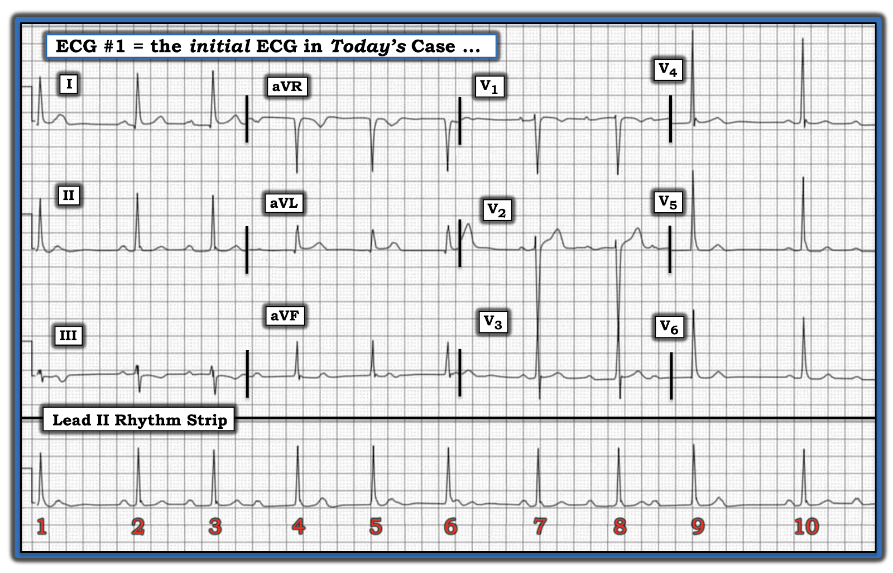
==============================
LƯU Ý: Việc diễn giải nhịp hôm nay khó vì nhiều lý do. Vì vậy — tôi sẽ đi từng bước một khi trình bày cách tiếp cận của tôi với bản ghi này.
- NẾU bạn muốn bỏ qua phần "từng bước" (và đi thẳng tới đáp án) — hãy cuộn xuống Hình-11 ở cuối trang này (để xem giản đồ bậc thang (laddergram) cuối cùng với Đáp án Cuối cùng!).
==============================
SUY NGHĨ CỦA TÔI về điện tâm đồ ở Hình-1:
Như mọi khi – tôi thích bắt đầu diễn giải bằng việc đánh giá dải nhịp chuyển đạo dài — dùng Cách tiếp cận Ps, Qs & 3R để nhớ lại 5 Thông số CHÍNH (Xem ECG Blog 185). Tôi thấy dễ nhất (và hiệu quả nhất) là hoãn việc đánh giá điện tâm đồ 12 chuyển đạo cho tới sau khi tôi đã có dịp xem xét nhịp.
ĐIỂM THEN CHỐT (PEARL) #1: Thứ tự bạn chọn để đánh giá 5 Thông số CHÍNH không quan trọng — và tôi thường bắt đầu với thông số nào dễ đánh giá nhất. Ví dụ — mặc dù tôi có thấy một số sóng P trên dải nhịp chuyển đạo II dài ở Hình-1 — tôi thấy dễ hơn khi bắt đầu bằng việc xem độ rộng QRS và tính đều (Regularity) của nhịp. Tôi đã tiếp cận bản ghi này như sau:
- Độ rộng QRS: Nhìn cả 12 chuyển đạo (để xem khoảng QRS dài nhất ở đâu) — hẳn là rõ ràng rằng phức bộ QRS hẹp (tức là, không quá 0.10 giây = không quá nửa ô lớn về thời gian ở bất kỳ chuyển đạo nào). Biết rằng tất cả phức bộ QRS trong bản ghi hôm nay đều hẹp — cho ta biết nhịp này là nhịp trên thất.
- Tính đều của nhịp: Hẳn là hiển nhiên rằng nhịp trên dải nhịp chuyển đạo II dài không Đều. Thay vào đó — mỗi khoảng R-R có vẻ hơi khác so với khoảng R-R kế bên — nên nhịp là không đều.
- Tần số của nhịp: Các khoảng R-R trên dải nhịp chuyển đạo II dài dao động từ hơn 4 ô lớn một chút — đến hơn 6 ô lớn một chút — gợi ý Tần số tim trung bình vào khoảng ~60/phút.
- Cách khác — Bạn có thể đi đến một ước tính tần số tim tương tự khi xét rằng có 10 nhát trong dải nhịp 10 giây này.
Tiếp tục đánh giá theo Ps, Qs, 3R:
Quá trình trên khiến tôi vẫn còn phải đánh giá 2 Thông số còn lại ( = sóng P — và — Liệu các sóng P hiện diện có Liên quan (Related) đến các phức bộ QRS kế bên hay không?):
- Sóng P: Chắc chắn có một số sóng P!
ĐIỂM THEN CHỐT #2: Như đã nhấn mạnh trong các bài ECG Blog trước — tôi nhận thấy bước đơn giản là đánh dấu sóng P hữu ích một cách đáng ngạc nhiên để: i) Xác định XEM có một nhịp nhĩ nền đều (hoặc gần đều) hay không; và, ii) Thuận lợi cho việc đánh giá xem một số (hoặc tất cả) các sóng P mà bạn xác định được có (hay không) Liên quan đến các phức bộ QRS kế bên.
- Tôi thích bắt đầu việc “Tìm sóng P” — bằng cách đánh dấu những sóng P mà tôi chắc chắn là có. Tôi đã làm điều này bằng các mũi tên ĐỎ ở Hình-2.

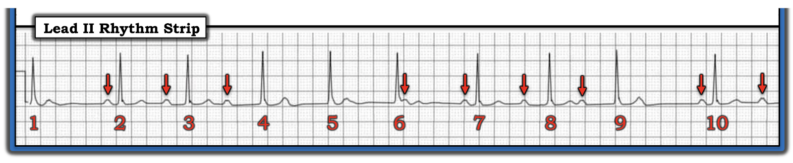
SUY NGHĨ CỦA TÔI về Hình-2:
Tôi thấy ít nhất 9 sóng P chắc chắn ở Hình-2 (mũi tên ĐỎ). Với 9 sóng P này — thời gian khoảng P-P giữa các sóng P kế nhau trông tương tự (dù không hoàn toàn giống hệt).
ĐIỂM THEN CHỐT #3: Thường khi tôi xác định được một số sóng P chắc chắn trong một nhịp phức tạp (như tôi đã làm với các mũi tên ĐỎ ở Hình-2) — trong đó thời gian khoảng P-P giữa các sóng P kế nhau là tương tự (như ở Hình-2) — có thể tìm thấy thêm các sóng P "đúng lúc" nằm trong phức bộ QRS hoặc sóng ST-T của các nhát xen giữa.
- Việc tìm thêm những sóng P “ẩn” (hoặc ẩn một phần) như vậy — sẽ dễ dàng hơn nhờ dùng compa đo (calipers)! Chỉ cần đặt compa bằng khoảng P-P mà bạn đo được giữa 2 mũi tên ĐỎ — rồi xem CÓ bằng chứng khía (hoặc thay đổi tinh tế khác ở một hay nhiều sóng T) tại khoảng cách đã đặt compa này trong những khoảng R-R dường như thiếu một mũi tên ĐỎ hay không (tức là, trong các khoảng R-R giữa nhát #1-2 — giữa nhát #4-5 — giữa nhát #5-6 — và giữa nhát #9-10).
- Tôi đã làm điều này bằng cách thêm các mũi tên VÀNG vào Hình-2 ở những chỗ này (Xem Hình-3). Hẳn là rõ ràng rằng lý do sóng T của nhát #1, 4, 5 và 9 đều trông hơi khác nhau ở Hình-3 — là vì một sóng P “đúng lúc” đang ẩn một phần trong (và làm biến dạng) sóng T của mỗi nhát này.

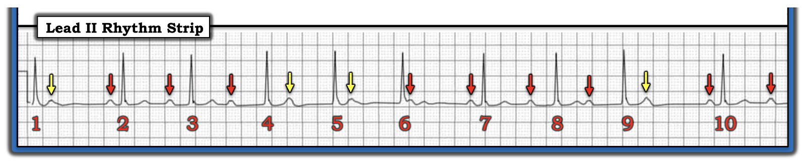
Có một nhịp xoang nền!
Như vậy, ở Hình-3 chúng ta đã xác định được — rằng có một nhịp xoang nền trong nhịp hôm nay. Để rõ ràng — tôi đã đánh dấu mỗi sóng P xoang dương ở Hình-4 bằng một mũi tên ĐỎ trên dải nhịp chuyển đạo II dài.
- NẾU cho tới giờ bạn đã dùng compa đo để hỗ trợ định vị các sóng P ẩn một phần — hẳn bạn đã nhận thấy có sự thay đổi nhẹ về thời gian của các khoảng P-P ở Hình-4. Đó là vì có một thành phần loạn nhịp xoang (sinus arrhythmia).
- BẠN có nhận thấy rằng có 13 sóng P (mũi tên ĐỎ) — nhưng chỉ có 10 phức bộ QRS ở Hình-4? Đó là vì không phải tất cả sóng P đều được dẫn truyền. Việc có nhiều sóng P hơn phức bộ QRS ở Hình-4 — gợi ý rằng nhiều khả năng có một dạng blốc AV độ 2 nào đó.
CÂU HỎI:
- BẠN có nghĩ rằng có sóng P nào ở Hình-4 đang được dẫn truyền xuống thất không? (GỢI Ý: Các khoảng PR trước bất kỳ nhát nào trong 10 nhát trên bản ghi này có bằng nhau không?).

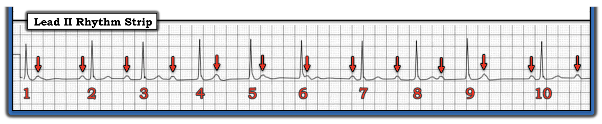
Có sóng P nào ở Hình-4 được dẫn truyền không?
Để rõ ràng, ở Hình-5 — tôi đã mã hóa màu các MŨI TÊN đánh dấu sóng P xoang trong nhịp hôm nay. Có một số khoảng PR giống hệt nhau trên bản ghi này.
- Các khoảng PR trước nhát #2, 7 và 10 là bình thường (tức là, 0.18 giây) — và có thời gian bằng nhau (mũi tên ĐỎ ở Hình-5). Lưu ý rằng các khoảng R-R trước mỗi nhát trong 3 nhát này — là những khoảng R-R dài nhất trên bản ghi này.
- ĐIỂM THEN CHỐT #4: Việc có nhiều khoảng PR giống hệt nhau trên bản ghi hôm nay khó là do ngẫu nhiên — và cho ta biết rằng những sóng P này đang được dẫn truyền xuống thất. Sự hiện diện của các nhát được dẫn truyền loại trừ blốc AV hoàn toàn!
- Các khoảng PR trước nhát #3 và 8 có thời gian tương tự (nhưng không giống hệt). Tôi mã hóa màu 2 sóng P này bằng các sắc độ XANH DƯƠNG khác nhau để chỉ ra rằng tuy khoảng PR trước nhát #3 và 8 rõ ràng dài hơn khoảng PR được đánh dấu bằng mũi tên ĐỎ — nhưng có một khác biệt nhỏ về thời gian khoảng PR (tức là, khoảng PR trước nhát #8 hơi dài hơn khoảng PR trước nhát #3).
- Các khoảng PR trước nhát #4 và 9 bằng nhau và còn dài hơn nữa (tức là, 0.50 giây — được đánh dấu bằng mũi tên XANH LÁ ở Hình-5)!
ĐIỂM THEN CHỐT #5: Xét đến nghi ngờ trước đó của chúng ta rằng có một dạng blốc AV độ 2 nào đó (vì phát hiện có nhiều sóng P hơn phức bộ QRS) — và — phát hiện các khoảng PR giống hệt nhau ở cuối mỗi khoảng ngưng tương đối (tức là, trước nhát #2,7,10 — mũi tên ĐỎ) — và — phát hiện khoảng PR kéo dài dần trong từng nhóm (tức là, từ mũi tên ĐỎ- sang XANH DƯƠNG- sang XANH LÁ) — Chẳng phải điều này gợi ý rằng loại blốc AV độ 2 hiện diện nhiều khả năng nhất là một dạng nào đó của Mobitz I ( = Wenckebach AV)?
- Các mũi tên TRẮNG gần đầu mỗi khoảng R-R dài hơn — dường như biểu thị các sóng P không được dẫn truyền (ẩn một phần trong sóng T của các nhát #1, 6 và 9). Không có gì bất ngờ khi những sóng P này không được dẫn truyền — vì chúng xuất hiện quá sớm trong chu kỳ (tức là, vào lúc tâm thất có lẽ vẫn còn trơ).
- Như vậy chỉ còn 3 sóng P nữa cần lý giải (tức là, các mũi tên ĐEN ở Hình-5). Chẳng phải sẽ hợp lý sao nếu các mũi tên ĐEN sau nhát #4 và 5 đang được dẫn truyền với khoảng PR dài dần — cho đến khi cuối cùng, sóng P mũi tên TRẮNG sau nhát #6 bị blốc — trước khi chu kỳ Wenckebach tiếp theo bắt đầu với một khoảng PR ngắn hơn nhiều (và bình thường) trước nhát #7 (mũi tên ĐỎ)?

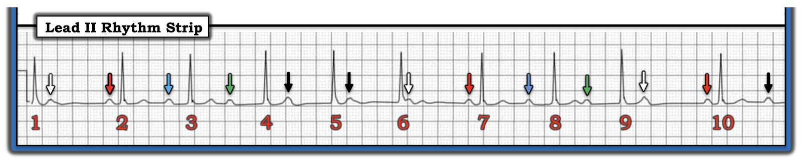
=========================
XIN NHẤN MẠNH: Mặc dù tôi đã mô tả rất chi tiết chuỗi các bước giải nhịp ở trên — việc dùng compa đo — và biết rõ cần tìm gì — đã giúp tôi giải được rối loạn nhịp phức tạp này trong vòng 2 đến 3 phút! Quá trình này có thể làm nhanh!
=========================
ĐIỂM THEN CHỐT #6: Tôi đoán rằng hầu như mọi độc giả của ECG Blog của tôi đều quen thuộc với kiểu cơ bản của dạng Mobitz I trong blốc AV độ 2 ( = Wenckebach AV). Trong Mobitz I "điển hình" — có nhịp nhĩ đều — và, khoảng PR kéo dài dần cho tới khi một nhát bị rớt. Tiếp theo là một khoảng ngưng ngắn — rồi chu kỳ Wenckebach tiếp theo lại bắt đầu.
- TẠI SAO nhịp hôm nay lại khó diễn giải đến vậy?
TRẢ LỜI:
Có rất nhiều biến thể của chủ đề blốc Wenckebach (Xem ECG Blog #251 để bàn luận — kèm một Audio Pearl về "Dấu chân" của Wenckebach). ĐIỂM THEN CHỐT #6 (ở trên) — là để thấy nhịp hôm nay là một biến thể tinh tế hơn của chủ đề Wenckebach "thông thường" như thế nào. Những lý do khiến nhịp này có thể đã không được các bác sĩ lâm sàng khám bệnh nhân ban đầu nhận ra bao gồm:
- Các khoảng ngưng chứa nhát bị rớt không dài hơn nhiều so với nhiều khoảng R-R khác trên bản ghi này. Thoạt nhìn — nhịp hôm nay trông gần như đều.
- 2 "nhóm" nhát trên bản ghi hôm nay (tức là, nhát #2 đến 6; và #7-9) trông không "giống" nhau (trong khi nhiều bản ghi Mobitz I có các nhóm 2 nhát hoặc 3 nhát tương tự nhau).
- Với các bản ghi Mobitz I điển hình — "mức tăng" khoảng PR lớn nhất (tức là, lượng mà khoảng PR tăng từ nhát này sang nhát kế tiếp) — xảy ra giữa nhát thứ 1 và thứ 2 trong một nhóm. Đây không phải là điều ta thấy trên bản ghi hôm nay — vì mức tăng khoảng PR lớn nhất thấy được khi chuyển từ sóng P mũi tên XANH DƯƠNG sang sóng P mũi tên XANH LÁ.
- Cuối cùng — Các sóng P mũi tên ĐEN trước nhát #5 và 6 được dẫn truyền với khoảng PR dài bất thường (tức là, lần lượt là 0.64 và 0.68 giây). Vì vậy — có vẻ không hợp lý khi cho rằng những sóng P mũi tên ĐEN này có thể đang được dẫn truyền.
Suy nghĩ cuối cùng về điện tâm đồ hôm nay:
Nhịp trong ca hôm nay là một ví dụ không thường gặp về blốc AV độ 2 loại Mobitz I ( = Wenckebach AV). Việc khoảng PR tăng bất ngờ giữa nhát thứ 2 và thứ 3 trong mỗi nhóm là kết quả của đường dẫn truyền kép trong nút AV (dual AV nodal pathways) — hay đơn giản chỉ là "biến thể của cùng một chủ đề" thì chưa chắc chắn — và có lẽ không quan trọng đối với diễn tiến lâm sàng của bệnh nhân này. "Tin tốt" — là đáp ứng thất chung không chậm — nên có thể bệnh nhân này không có triệu chứng. Đáng tiếc — Chúng tôi không được cung cấp bất kỳ bệnh sử lâm sàng nào.
- Sau khi diễn giải nhịp trong ca hôm nay — chúng ta cần đánh giá phần còn lại của điện tâm đồ 12 chuyển đạo. Mặc dù chúng ta không biết tuổi của bệnh nhân này — biên độ QRS có vẻ tăng rõ rệt (tức là, sóng S rất sâu >25 mm ở chuyển đạo V2 — và sóng R cao ở các chuyển đạo ngực bên) — nên nghi ngờ LVH.
- Sóng T âm ở chuyển đạo III không nhất thiết là bất thường, vì QRS ở chuyển đạo này chủ yếu âm. Dường như không có thay đổi ST-T cấp nào.
- Đối chiếu lâm sàng sẽ là thiết yếu để xử trí tối ưu ca hôm nay! Trong ECG Blog #307 — chúng tôi đã tìm hiểu các bệnh cảnh lâm sàng quan trọng nhất liên quan đến blốc AV độ 2 hoặc độ 3 (Xem Hình-6 trong ECG Blog #307). Mặc dù nhồi máu thành dưới cấp có lẽ là nguyên nhân thường gặp nhất của Wenckebach AV — không có dấu hiệu nào của điều này trên điện tâm đồ hôm nay. Tuy nhiên có thể có LVH — nên việc đánh giá đầy đủ bệnh nhân này để tìm nguyên nhân tim nền gây ra rối loạn dẫn truyền AV này là cần thiết.
Xác nhận cuối cùng về nhịp trong ca hôm nay:
Cách TỐT NHẤT để chứng minh cơ chế của một nhịp tim phức tạp — là dựng Giản đồ bậc thang một cách tuần tự — điều mà chúng tôi minh họa theo từng bước qua 6 Hình tiếp theo.
- LƯU Ý: Để biết thêm về cách đọc (và/hoặc vẽ) giản đồ bậc thang — Mời xem ECG Blog #188 (gồm các công cụ hỗ trợ giảng dạy + LIÊN KẾT tới hơn 50 giản đồ bậc thang có minh họa mà tôi đã công bố).
Bắt đầu với Hình-6:

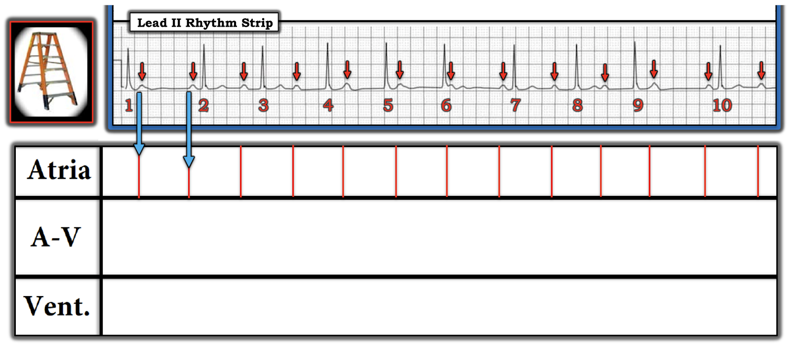

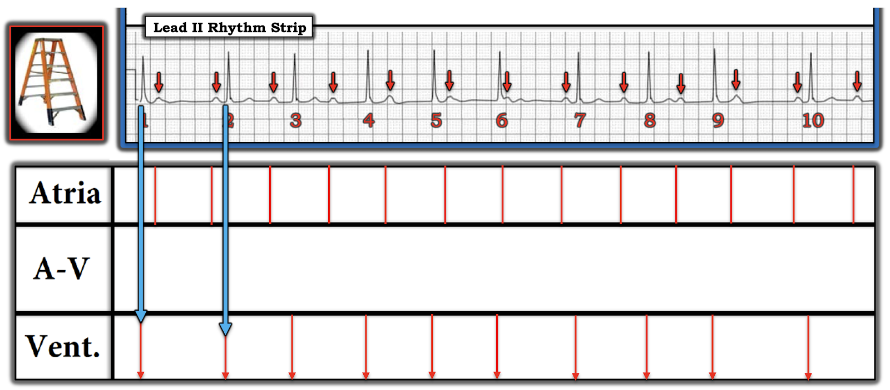

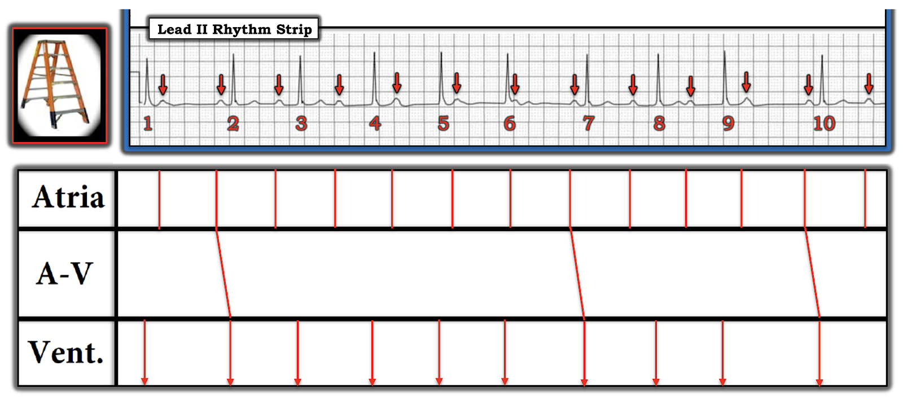

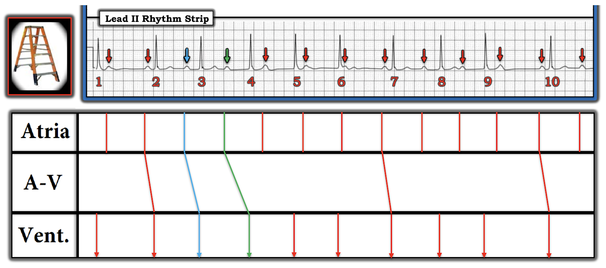

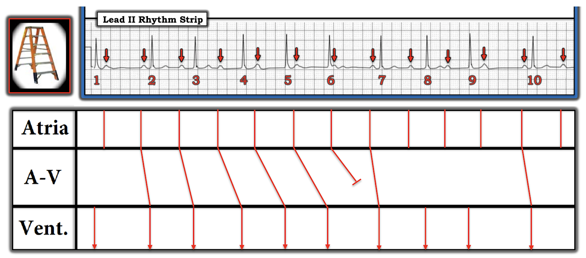

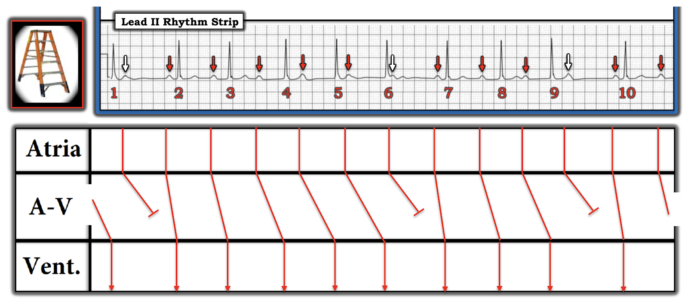
KẾT LUẬN: Từ giản đồ bậc thang này, hẳn là rõ ràng rằng có 2 nhóm Wenckebach — một nhóm trong đó khoảng PR tăng dần từ nhát #2 đến 6 (cho đến khi sóng P mũi tên TRẮNG xuất hiện ngay sau nhát #6 bị blốc) — và một nhóm Wenckebach ngắn hơn (nhát #7-9), với khoảng PR tăng dần cho đến khi sóng P mũi tên TRẮNG sau nhát #9 bị blốc. Như vậy, nhịp trong ca hôm nay = blốc AV độ 2, Mobitz loại I (Wenckebach AV) với dẫn truyền AV 6:5 và 4:3.
==================================
Lời cảm ơn: Tôi xin cảm ơn Arkan KaDhim (từ Baghdad, Iraq) đã gửi ca bệnh và bản ghi này.
==================================
Các bài ECG Blog liên quan đến ca hôm nay:
- ECG Blog #205 — Ôn lại Cách tiếp cận hệ thống của tôi trong đọc điện tâm đồ 12 chuyển đạo.
- ECG Blog #185 — Ôn lại Cách tiếp cận hệ thống của tôi trong đọc nhịp.
- ECG Blog #188 — Ôn lại cách đọc (và/hoặc vẽ) giản đồ bậc thang (kèm LIÊN KẾT tới hơn 50 ví dụ lâm sàng về giản đồ bậc thang mà tôi đã vẽ).
- ECG Blog #186 — và ECG Blog #236 — để ôn lại những điều cơ bản về blốc AV độ 2.
- ECG Blog #192 — Ôn lại 3 nguyên nhân của phân ly nhĩ thất — và nhấn mạnh vì sao phân ly nhĩ thất không giống với blốc AV hoàn toàn.
- ECG Blog #191 — Nhấn mạnh sự khác biệt giữa phân ly nhĩ thất với blốc AV hoàn toàn.